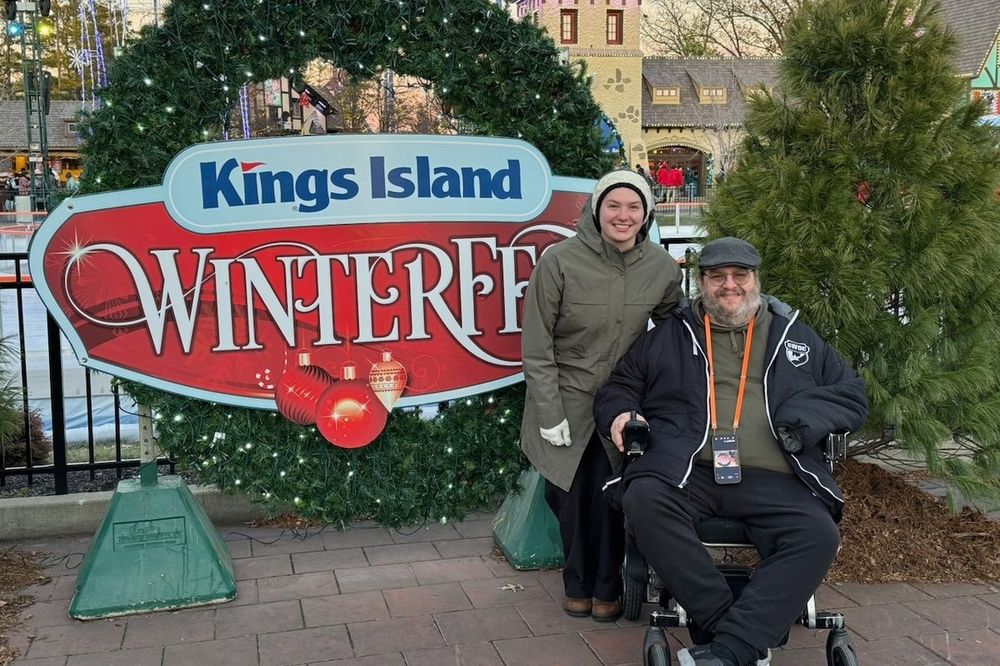

Accessible Ohio: Kings Island
Cassidy Travel, independent travel advisor of Fora Travel. Checked October 2026; confirm before you go.

Kings Island in Mason is about 30 minutes from Waynesville, which makes it the big theme park closest to home. This guide covers parking and the entrance, the ride access program, which rides work for wheelchair users, restrooms, shows and dining, rentals, sensory supports, and Halloween Haunt and WinterFest.
Kings Island is now part of Six Flags, so the official pages live at sixflags.com/kingsisland (opens in a new tab). Some older guides online still describe the old Boarding Pass process, so check the current rules before you go.
Parking
The accessible spaces are to the right of the entrance, in the rows closest to the Front Gate. They fill up, especially on Saturdays and on Halloween Haunt nights, so arrive early if you want one. If they're full, the best option is to drop off at the Front Gate and have the driver park in a regular space. Preferred Parking near the gate costs extra.
The entrance
Bag check uses metal detectors, and there's a separate line for wheelchairs and strollers, so you don't have to squeeze through the main lanes.
Skipping the line: the Attraction Accessibility Program
Kings Island uses the IBCCES Accessibility Card for its Attraction Accessibility Program, like other Six Flags parks.
- Register free at accessibilitycard.org (opens in a new tab) at least 48 hours before your visit. A parent or guardian registers for a child.
- The card lasts a year and works at other participating parks.
- When you arrive, take your IBCCES card to Guest Services, at the far right of the ticket scanners. They'll give you the park's green card.
- At each ride, the attendant gives you a return time that matches the current standby wait. When it's time, show your green card and enter through the ride's exit lane.
- The card is how you ask for accommodations; the park decides what it can offer on each ride, and it doesn't replace your ticket. Ask Guest Services how many companions can ride with you.
Which rides work from a wheelchair
Only two rides let you stay in your wheelchair: the train and the Eiffel Tower. Every other ride means transferring out of your chair, and each one has its own rules, such as being able to transfer on your own or brace yourself.
The park's Guest Accessibility Guide, linked from its accessibility page, lists the requirements ride by ride. Read it with your crew before you go, so nobody waits for a ride they can't board.
Help with transfers:
- Transfer devices, available on request, help lift you out of your wheelchair and into the ride at Banshee, The Beast, The Racer, Mystic Timbers, The Bat and Woodstock Express.
- Removable sides on specific ride vehicles make it easier to get in at Queen City Stunt Coaster and Snoopy's Soap Box Racers. Ask the attendant for that car.
- At Phantom Theater, staff stop the moving loading line so you can get into the ride vehicle safely.
Restrooms
Every restroom area has an accessible restroom with an adult changing table. That's rare at a big theme park, and it makes a long day much easier for families who need one.
First Aid and medication
First Aid can store medical equipment and refrigerate medication for you, so you don't have to carry a cooler all day.
Shows and dining
Shows have dedicated spaces for wheelchair users and their companions, so you can sit together. Some outdoor tables have a bench removed, so you can roll right up to the table to eat.
Getting around
There are no big hills, and the paths are easy to use in a wheelchair.
Wheelchair and scooter rentals
Manual wheelchairs and electric wheelchairs with a sun canopy can be booked online for a specific date; fees apply. Rentals are picked up inside the Front Gate, so bring your own chair if you need one from the car.
Sensory needs and autism
Kings Island earned the IBCCES Certified Autism Center designation in 2020, which means staff completed autism-specific training.
There are fireworks every night during the regular season. If loud bangs are hard for someone in your group, ask Guest Services what time they start, and bring noise-canceling headphones or plan to leave before then.
Halloween Haunt can be overwhelming for anyone with sensory needs. If you go, buy a No-Boo necklace. It tells the scare actors to leave you alone. Haunt runs select nights in the fall.
For Deaf, hard of hearing, blind and low-vision visitors
The park offers Braille and large-print guides, and services for guests with hearing or visual impairments. Ask Guest Services what's available on your date.
Service animals
Service animals are welcome. Some rides can't take them, so check the Guest Accessibility Guide and plan who waits with the dog.
WinterFest
WinterFest runs select nights from late November through December 31. Check the park calendar for this year's dates and hours. It's easy to get around in a wheelchair, even at night.
My take
For a wheelchair user, a good day at Kings Island comes down to planning. Register for the IBCCES card at least two days ahead, read the ride guide so you know which rides you can transfer onto, and arrive early on Saturdays and Haunt nights to get an accessible space near the gate. Adult changing tables at every restroom area make it one of the easier big parks for families who need them.
Official page: Kings Island accessibility (opens in a new tab). More guides like this: Accessibility guides.
Planning a trip like this? There's no planning fee for vacations.